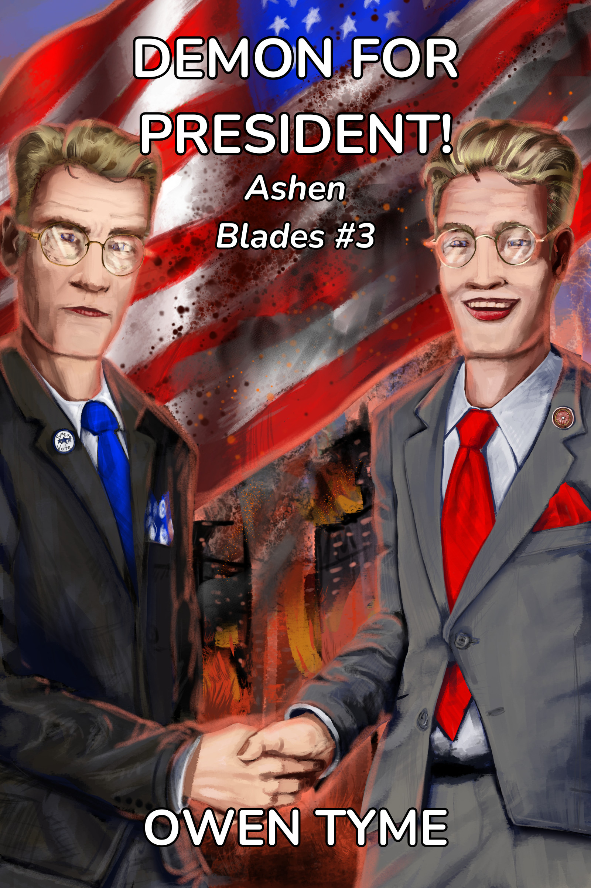
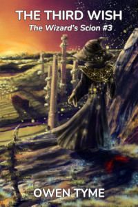

Tymely News
Shame On Me, I Guess, Part III
Despite my earlier posts regarding how much I dislike the social-media-platform-that-shall-remain-nameless, I got used to using it as an additional platform on which to toot my horn and gain some fans.
I had hoped to reach a larger audience, but now regret my choice to use that website for more than just an experiment.
What Happened?
I released Demon for President!, which is a political satire piece, in which a demon runs for President of the United States.
I posted about it a few times via a science-fiction and fantasy group that I'd taken a liking to, which requires manual approval for all posts before they're shown publicly. The group admin had no issue with what I was doing and approved. He often hit like on my posts in the past, as well. Not that one, but political satire isn't everyone's cup of tea, so fair enough.
Then yesterday, the social-media-platform-that-shall-remain-nameless pulled every last one of my posts to the group over a supposed rule violation for "fraud and deceptive practices". The group admin was absolutely mystified by this, because he knew as well as I that I wasn't deceiving anyone. Any human being that read my posts would have come to the same conclusion.
The software (probably AI) that the social-media-platform-that-shall-remain-nameless uses to moderate literally cannot tell the difference between language related to selling a political satire book and an attempt to get people to vote for a non-existent demon that's running for president.
The absurdity of this is actually quite astonishing to me.
Based on the message that was shoved in my face over this unjust enforcement of their rules, they literally claim the rules for their website are not just enforced by software, but that no human being was even involved in checking the software's work. I have no option to appeal and no opportunity to seek for this to be made right.
In short, they must have fired their human moderators and replaced them with software as a result of their worship of the almighty dollar and desire to cut costs all the way to the bone.
Yes, companies exist to make a profit, but long-term profits have never been found by tying up the end-user, so they can't resist (monopolistic practices), dropping drawers and squatting down on the end user's face (disrespecting the user), followed by defecating into their screaming, open mouth (expecting them to take whatever is dished out, no matter how vile).
That is a disgusting state of affairs, which can only lead to further injustice and it's simply bad business. Period.
It's also a matter of squashing people's right to voice themselves. Yeah, I know, the first amendment doesn't apply, because they own the website, not the government, but squashing people's rights has never been a good business decision in the long run, because the users will leave like rats bailing from a sinking ship, sooner or later.
What Now?
I will never use the social-media-platform-that-shall-remain-nameless again, not even for an experiment. My page there will remain up for another month or two, just to give the people I'm leaving behind a chance to see what happened and point the way to greener pastures.
I doubt they'll follow, but I'll at least have the satisfaction of knowing I've done the right thing by trying to raise the warning flag.
Alternatives?
Mastodon is a wonderful social media platform that I can't praise enough, which mimics the interface of the social-media-platform-formerly-known-as-twitter. I've been welcomed by the people that use it, the platform itself treats me with respect and the rules for the server I use are really quite short and straight to the point. I've been using it about the same amount of time as the social-media-platform-that-shall-remain-nameless, but I've had far more success there.
Here's my Mastodon profile, in case you're interested.
I've also recently discovered Lemmy, which is a decentralized forum system that operates similar to Mastodon, based on the same underlying technology (ActivityPub). I'll probably be using this in the future, but I've also been considering using Reddit, because it has a larger user-base.
Pulling Back the Curtain...
The social-media-platform-that-shall-remain-nameless is Facebook, by the way. It's been said before and I'm sure it will be said many times more, but the company isn't worth trusting. Their business practices are atrocious and the only reason they haven't failed is because they're so huge, with so many users, no one can stand the idea of leaving their family and friends behind, even though they'd like to stop using that website.
My suggestion: it's time to walk away. Sometimes, you just have to cross the bridge and then burn it down before the vicious wolves nipping at your heels can reach you.
I should have stuck to my original opinion and never bothered with Facebook, but that's where the people are and I was just trying to promote my novels.
From now on, I'll remember this lesson and hopefully this article series won't get a fourth entry, because that really would be embarrassing for me. "Shame on me", indeed.
What I'll be Doing
Facebook effectively tried to censor one of my books, so would anyone be interested in reading "The Novel Facebook Tried to Silence!" Somehow, I suspect that's a line that will sell books...
Evidence and What I Left Behind
I wish I had screenshots of the posts Facebook removed, but I've got nothing left of most of them due to Facebook wiping them out.
Facebook wiped out at least three promotional group posts (once again, I remind you that these required admin approval to be shown) related to Demon for President!. First was a short post with just the cover and a description of the book, mostly word for word copied from the back cover text, along with the book's cover
Second, I used my ad flyer, which shows off the Republican and Democrat personas of the villain of the book, along with I believe more or less the same text as the previous post. I may have added a little blurb to describe the series, but I'm not sure.
Last of all was a post offering free Ebooks in exchange for honest reviews. It was only tangentially related to Demon for President!, in that it displayed the cover of it.
There was no act of fraud and no intent to deceive anyone in any of this, despite Facebook's unjust claims of such. I was just trying to promote my most recently published novel and get some much-needed reviews, as any self-published author would.
Post #1: Reconstructed Book Announcement
This is as close as I can get to the original text of the post I made announcing the publishing of Demon for President!. I can't guarantee the text is 100% as it was, but this should be quite close, because most of it was a copy+paste from the same sources and it was just a re-arranged and expanded version of one of my Mastodon posts:
Book #3 of Ashen Blades, Demon for President! is now available for pre-order, coming to online bookstores June 10, 2024: https://owentyme.us/books/ashen-blades/demon-for-president.html
When a snake demon in an expensive, tailored suit takes an irreverent stab at American Presidential politics, the Hunter is literally forced to take a stab at him, to save the USA from getting a Demon for President!
The Hunter’s demonic arch-nemesis, Vogerath, returns to Earth once more, but this time, he’s running for President of the United States, on the 2024 ballot! Worse yet, the demon’s unique power to be in multiple places at once allows him to convincingly pretend to be identical twins, running as both a Republican and Democrat!
The other candidates all drop out of the race under mysterious circumstances and with his best competition being himself, he’s practically assured a win!
Soon, the American people are lapping up the snake-in-a-suit’s every word as if it were ambrosia, calling out his name at every turn, magically charmed to believe he’s the best thing since sliced bread, despite the checkered, criminal history of his “family.”
Hard pressed to get rid of him, the half-demon Hunter and her allies kill him repeatedly, but he pops back up like a bad weed, making all of his appointments on time, photogenically kissing babies, cutting the ribbons of stores and donating laundered blood-money to charitable causes.
Will the hunter manage to end the demon’s presidential campaign before election day? If she doesn’t, the USA may just get a Demon for President! Buy this book today and find out for yourself!

Post #2: The Flyer
Days later, I finally came up with a proper flyer for the book, along with some ad text I was happy with. I can't recall the text for this one, but I think it was nearly identical to the previous post, because I was rather tired at the time and in a lazy mood. I think it was posted on June 8th, but it might have been the 9th. I'm not sure.

Post #3: The Review Request
I'm lucky I saved the text of the last of my censored posts, because I intended to use it elsewhere (and yes, that giveaway code is still good):
FREE Ebooks! Use the code 'P6YFQ' via this link to get free Ebooks of my novels: https://www.smashwords.com/profile/view/OwenTyme
If you use this code, then please write an honest review as soon as you've read each book. The truth is I really do need the reviews, just to prime the pump a bit. After all, almost no one will take a chance on a book with no reviews.
Please post reviews to the sites you usually buy from, because most online book sellers, including Amazon and Barnes and Noble, will allow you to post a review without making a purchase.
All of my currently published novels are available to you, including Troll Song, Forgotten Legends, The Third Wish, She Hunts Demons, She Goes to War and Demon for President! My always free short stories are also available, including Emergent Consequences and She Goes to Summer Camp. So, yes, my entire catalog of works are free to you through June 30th, after which the code expires.
Here are some examples of sites on which you can write reviews (each link should point to a list of my published works):
https://www.amazon.com/s?i=digital-text&rh=p_27%3AOwen+Tyme&s=relevancerank&text=Owen+Tyme
https://www.goodreads.com/author/show/45452178.Owen_Tyme
https://www.barnesandnoble.com/s/%22Owen%20Tyme%22
https://fable.co/author/owen-tyme

What the Admin Posted
You can find the post from the admin of the group here: https://www.facebook.com/groups/scififan/permalink/8044035455647552/
And because I want as much of the evidence out of Facebook's hands as possible, here's a screenshot of the message, including the screenshot he posted and was confused over, along with my comment:

Note the other comment: another witness of the awful over-reaching of the rules, along with willful ignorance of other infractions.
To summarize: no one asked for this unjust enforcement of rules, no one is happy about it and even the admin of the group is mystified about why it happened!
What the Admin Asked Me
The admin also reached out to me. Here's a screenshot of our brief conversation on the matter:

At the time he reached out, I was only aware my review request post had been taken down (I suspected it was because of the use of "we" in the image), but after answering him I dug a little deeper, finding three or possibly four of my posts were gone, all related to the political satire piece, so I think that was the real cause.
Post #4: The Goodbye Post From My Facebook Page
Finally, here's a quote from my last post on Facebook, for the sake of preservation, in case it gets censored just like my group posts about my novel:
I'm done with this social media platform. I don't like the way they enforce their rules (all done with software, with no human to review what the software does, plus no one can appeal to a human over unjust rule enforcement by that software).
They've unjustly applied their rules to me on multiple occasions, sometimes due to over-zealous software that can't grasp the subtleties of human communication and other times because of a literal bug in their software that got me slapped with rule violations for an ad I didn't even run, the form for which was auto-populated by their own software.
Yes, I'm serious: the software filled the form and then punished me for the content of it, before I could even change it. I'm tired of how broken this website is. Period. So, I won't be posting here anymore. I'll leave the page up for now, to get the word out, but when I'm ready (probably in a month or two), it will come down.
If you still want to follow my work on a social media platform, try my Mastodon profile, which is where I'm most active: https://mastodon.social/@OwenTyme
Alternatively, you can bookmark my website and visit from time to time, because I update it often: https://owentyme.us My website includes a blog you can subscribe to with an RSS reader: https://owentyme.us/blog/
Finally, if you just want to chat with me, my E-mail address has always been public: owentyme@owentyme.us
Good luck to all of you that are staying behind. I'm sure the rule-enforcement bots are coming for you next, since we apparently live in a dystopian future ruled by robots.
Final Thoughts
Sorry this post is far longer than my typical blog entry, but I wanted to both express my feelings and set aside some evidence of Facebook's shameful behavior for the sake of warning others.
I hope you learned something of value from my experience, because perhaps that would make it all worth it.
Tags: social-media, social-media-platform-that-shall-remain-nameless
New Release: Demon for President!
I'm delighted to announce the release of a new book! The third volume of Ashen Blades, Demon for President! is now available as an Ebook!

The Hunter's demonic arch-nemesis, Vogerath, returns to Earth once more, but this time, he's running for President of the United States, on the 2024 ballot! Worse yet, the demon’s unique power to be in multiple places at once allows him to convincingly pretend to be identical twins, running as both a Republican and Democrat!The other candidates all drop out of the race under mysterious circumstances and with his best competition being himself, he's practically assured a win!
Soon, the American people are lapping up the snake-in-a-suit’s every word as if it were ambrosia, calling out his name at every turn, magically charmed to believe he’s the best thing since sliced bread, despite the checkered, criminal history of his “family.”
Hard pressed to get rid of him, the half-demon Hunter and her allies kill him repeatedly, but he pops back up like a bad weed, making all of his appointments on time, photogenically kissing babies, cutting the ribbons of stores and donating laundered blood-money to charitable causes.
Will the hunter manage to end the demon's presidential campaign before election day? If she doesn’t, the USA may just get a Demon for President! Buy this book today and find out for yourself!
There's also a promotional page for this book, which includes links to political pins you can buy.
Tags: ashen-blades, novel, publishing
Stickers of the Hunter
Ryan Johnson, the artist that does my book covers, sometimes also does little tie-in products that can be picked up from his store page, like the prototype sticker imaged here, which he kindly sent to me so I could see how they'd turn out.
The currently sold version omits the text and just shows the Hunter/Little Miss Secret/LMS.
Personally, I hope to see other artistic tie-ins to my work in the future. I even get a little money from each sale, since they're based on my writing.
Tags: ashen-blades
The Third Wish, in Ebook and Print!

Plagued by horrific nightmares, the consequences of war and reeling from the loss of his family, the Steel Wizard, Levi Jacobs copes by throwing himself into work, but old enemies gain the power to travel through time, refusing to give him a moment to grieve. Making matters worse, an impatient and violent alien pirate lurks in orbit.Far from friendly, the alien pirate is boiling with rage over several massive blows to his pride at the hands of humanoids. Unable to kill those responsible, instead he plots revenge on their child, Levi, and everyone around him, to regain face in the eyes of his own kind, for whom personal pride is literally everything, including social ranking and the right to rule.
While Levi's busy dealing with the pirate, a deposed prince scours history for allies, putting together a frightening misfit team of spies, dangerous trolls and wizards that all have a grudge to settle with Levi and his family. Intent on changing history to suit themselves, they strike at the foundations of the present, threatening to kill Levi's father at a pivotal moment on which the history of the galaxy hangs.
Will Levi solve this mess and move forward with his life or will he buckle under the responsibility of protecting both what he has and what he's lost?
I'm very pleased to announce that book three of The Wizard's Scion, The Third Wish is now available for 3.99 in Ebook or 18.99 in paperback (US dollars).
I hope you'll enjoy it as much as I did!
Tags: ashen-blades, novel, publishing
New Stores For My Books!
There's recently been some interesting developments for me in regards to where fans can find my novels and short stories online.
Bookshop.org
I recently learned my print books are for sale on bookshop.org at the prices I set, which is a rare thing to see (most online stores carrying my books mark them up to insane prices). After asking on Mastodon about it, I learned its a reputable online store, so I've added it to my multi-store book links.
I quite like the site, because not only is it extremely highly rated, but it also helps support small book stores by sharing the profits of online sales with them.
Due to how much people seem to love the site, I've moved it to the head of the list of reputable stores where you can buy my books.
Bookshop.org is now my favored online store for purchasing print copies of my books.
Fable.co
Draft2Digital (the platform I publish through) recently added a new online Ebook store for distribution that looks absolutely amazing to me, because it's a combination of an Ebook store and an online book club host.
Fable.co is a site I'm seriously thinking of giving a whirl, because it looks like I could setup a book club centered around my own novels.
Sadly, Fable doesn't yet show up in my multi-store links, but I'm hoping Draft2Digital will update their system to allow this, soon.
Still, it's another interesting online destination and a very promising-looking site.
In Conclusion
I would now suggest you pick-up print copies of my books from bookshop.org, because some of the money filters down to local book stores.
Despite the wonderful addition of Fable to the mix, my favorite store for Ebooks is still Smashwords, because the Ebooks they sell can be used on any device of your choosing and I happen to get fatter profits from sales there (the parent company of Smashwards is Draft2Digital, so there's only the one middleman).
Tags: publishing
She Goes to War, Now in Print!
The second volume of the Ashen Blades series, titled She Goes to War, is available in print! In addition, She Goes to Summer Camp, the short story included in She Goes to War, is available both as a free Ebook and in print.
If you want to own both, buy the novel. If you want to get a free taste of the Ashen Blades series, claim your free copy of She Goes to Summer Camp today!
She Goes to War

The Hunter never wanted to go to war, but in 1972, she senses the return of her demonic arch-nemesis, Vogerath, to the world. Following his magic like a bloodhound, she finds herself inexplicably drawn to Vietnam, a war zone.With a pressing need to kill Vogerath, who claims to be the serpent from the Garden of Eden, the half-demon Hunter is joined by her detective partner, Clayton Simmons, and a powerful witch, Verda Bagley.
It was meant to be a simple search and destroy mission, but nothing in the jungles of Vietnam is ever simple and their plans go off the rails the moment the Hunter sets foot on the ground. She’s overcome by the magic of the jungle, which causes her to forget her humanity and transform into a great, black cat with blue eyes!
Her team are forced to subdue her, to bring her back to her senses, but the consequences of her instinct-driven actions leave them troubled, because she killed a demon disguised as an American soldier and his best friend wants revenge! As this fresh, unwanted conflict comes to a close, the Hunter’s hands are reluctantly stained with human blood.
Vogerath’s jungle hideout is surrounded by soldiers and the raid begins, but the Hunter’s plan continues to go wrong. After a unit of tanks is overrun, the US military throws everything they’ve got at the demons, inadvertently playing into Vogerath’s hands! The demon grows stronger with each attack and awaits the power of a nuclear strike, planning to use it to open a portal to Hell, so endless legions of demons can march forth to conquer the Earth!
Will the Hunter and her friends stop Vogerath in time or will the world be conquered by demons? Buy this book today and find out!
Includes a bonus novella: She Goes to Summer Camp, in which the Hunter faces the most unthinkable and horrifying of challenges: teenagers.
She Goes to Summer Camp

Camp Sapphire Friendship, a summer camp for teens, was the last place the Hunter wanted to go, but she'd made a vow to protect humanity from demons, no matter where they appeared and in 1986, her team of demon-slaying experts is called on to investigate. However, to make things even worse, the Hunter's team leader sends her into the camp as an undercover operative, under the guise of a regular teen, despite the fact that the half-demon girl being old enough to be the grandmother of the kids at camp.She's soon caught up in the daily minutiae of camp, learning a few new things along the way, while followed around like a puppy by a new "friend", a motor-mouthed girl that never shuts up. On the very first day, she also acquires a trio of teenage foes in the form of some valley-girl sisters from Los Angeles, who take every opportunity to insult and plays pranks on her.
However, despite the innocent look of the place, danger lurks around every corner, because the owner of the camp, Miss Macie Weber, is an untrained witch, whose unknowing, haywire magic threatens to kill everyone by summoning powerful and vengeful nature spirits, on top of the demons already lurking among the humans at camp!
Will the Hunter find and slay the the demons or will the nature spirits take offense at her mere presence, because she's had the Jungle Spirit stuck inside her head since 1972?
Download today and find out!
Tags: ashen-blades, novel, publishing
She Goes to War, Coming April 5th!
The second volume of the Ashen Blades series, titled She Goes to War, is now available for pre-order as an Ebook. The print edition still has a few details to work out, but should be available soon.
She Goes to War will be available on April 5th, 2024!
This one is special to me, because a friend of mine that fought in Vietnam talked me into writing it and then served as my primary source of information on the jungles of Vietnam. According to him, I hit the nail on the head and the details of the setting are as close to perfect as they can be.
I hope you'll enjoy it!
Due to how serious and emotionally difficult this novel was to write, I decided to pair it with a rather humorous bonus novella, She Goes to Summer Camp, in which our stalwart heroine goes undercover at a summer camp where teens have gone missing four years in a row, in search of the demon responsible, but nothing could have prepared her for the horrors of dealing with teenagers.
When final arrangements for art are complete, She Goes to Summer Camp will also be released as a short story as part of my Short of Tyme collection.
The Hunter never wanted to go to war, but in 1972, she senses the return of her demonic arch-nemesis, Vogerath, to the world. Following his magic like a bloodhound, she finds herself inexplicably drawn to Vietnam, a war zone.With a pressing need to kill Vogerath, who claims to be the serpent from the Garden of Eden, the half-demon Hunter is joined by her detective partner, Clayton Simmons, and a powerful witch, Verda Bagley.
It was meant to be a simple search and destroy mission, but nothing in the jungles of Vietnam is ever simple and their plans go off the rails the moment the Hunter sets foot on the ground. She’s overcome by the magic of the jungle, which causes her to forget her humanity and transform into a great, black cat with blue eyes!
Her team are forced to subdue her, to bring her back to her senses, but the consequences of her instinct-driven actions leave them troubled, because she killed a demon disguised as an American soldier and his best friend wants revenge! As this fresh, unwanted conflict comes to a close, the Hunter’s hands are reluctantly stained with human blood.
Vogerath’s jungle hideout is surrounded by soldiers and the raid begins, but the Hunter’s plan continues to go wrong. After a unit of tanks is overrun, the US military throws everything they’ve got at the demons, inadvertently playing into Vogerath’s hands! The demon grows stronger with each attack and awaits the power of a nuclear strike, planning to use it to open a portal to Hell, so endless legions of demons can march forth to conquer the Earth!
Will the Hunter and her friends stop Vogerath in time or will the world be conquered by demons? Buy this book today and find out!
Includes a bonus novella: She Goes to Summer Camp, in which the Hunter faces the most unthinkable and horrifying of challenges: teenagers.
Tags: ashen-blades, novel, publishing
Character Feature: Otto Vogerath (AKA Pride)

Three AI-generated images of Vogerath. In all three images, he wears a gray suit and blood-red power tie.
(Left) A shot focused on just the head of the man and he smiles evilly, very pleased with himself. There's fresh blood on the wall behind him.
(Middle) A wider-framed shot, in which he's still smiling, but the grin isn't quite so wide and the blood on the wall is more smeared than spattered.
(Right) The blood on the wall is long dry and Vogerath has dropped the Illusion of humanity he normally portrays, revealing his true nature as a snake demon.

Otto Vogerath may be many things, including a German man that supposedly came to the states before the Nazis took over Germany, the ring leader of a circus, an abusive husband and father, a criminal, a mob boss, a mass-murderer, a mad genius plotting world domination, but all of that pales in comparison to his true identity: Otto Vogerath is one of the seven Arch-demons that rule Hell, where he's known as Pride.
He's very intelligent and often runs mental circles around his opponents, treating them almost like puppets dangling from strings, continually manipulating them into doing exactly what he wants. In that regard, he's playing a grand-scale game of chess, while his opponents think they're playing a simple hand of go-fish for no stakes, when in fact, the stakes couldn't be higher.
Even when he appears to be losing, he's usually accomplishing something of lasting value to his long-term goal of galactic domination or just possibly, taking over Hell. What really motivates him is a mystery to all others, but he'll never give anyone a straight answer.
Vogerath is extremely old, having been born before the dawn of humanity, which makes it almost believable when he claims to be the Serpent from the Garden of Eden.
Whether that's true or not, however, he is the living embodiment of Pride, literally believing himself to be a cut above all others, his greatest flaw.
However, when his plans start falling apart, making him look the fool, he can be extremely dangerous and unpredictable.
When his life is on the line, he becomes a total coward, because in his mind, he's the most important person in the multiverse, bar none. Therefore, leaving his minions to die while he escapes is perfectly acceptable.
Vogerath is the arch-nemesis of Little Miss Secret, because he's responsible for murdering her parents. His mysterious plans revolve around the girl, because he has need of the unique powers of a half-demon. He may even be responsible for arranging for her to be born.
Tags: ashen-blades, character-feature